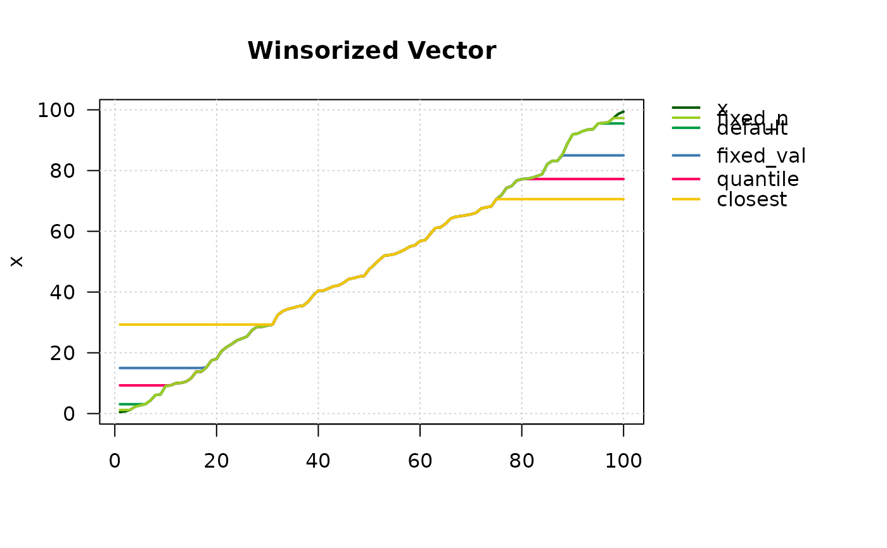

Winsorizing a vector means that a predefined quantum of the smallest and/or the largest values are replaced by less extreme values. Thereby the substitute values are the most extreme retained values.
A vector of the same length as the original data x containing
the winsorized data.
The winsorized vector is obtained by
$$g(x) = $$$$ \left\{\begin{array}{ll} $$$$ -c &\textup{for }x \le -c\\ $$$$ x &\textup{for } |x| < c\\ $$$$ c &\textup{for }x \ge c $$$$ \end{array}\right. $$
You may also want to consider standardizing (possibly robustly) the data before you perform a winsorization.
library(DescTools)
## generate data
set.seed(9128)
x <- round(runif(100) * 100, 1)
(d.frm <- DescTools::Sort(data.frame(
x,
default = Winsorize(x),
quantile = Winsorize(x, quantile(x, probs=c(0.1, 0.8), na.rm = FALSE)),
fixed_val = Winsorize(x, val=c(15, 85)),
fixed_n = Winsorize(x, val=c(Small(x, k=3)[3], Large(x, k=3)[1])),
closest = Winsorize(x, val=Closest(x, c(30, 70)))
)))[c(1:10, 90:100), ]
#> x default quantile fixed_val fixed_n closest
#> 37 0.5 3.08 9.28 15 1.2 29.3
#> 81 0.7 3.08 9.28 15 1.2 29.3
#> 28 1.2 3.08 9.28 15 1.2 29.3
#> 36 2.3 3.08 9.28 15 2.3 29.3
#> 82 2.7 3.08 9.28 15 2.7 29.3
#> 43 3.1 3.10 9.28 15 3.1 29.3
#> 16 4.3 4.30 9.28 15 4.3 29.3
#> 44 6.1 6.10 9.28 15 6.1 29.3
#> 88 6.3 6.30 9.28 15 6.3 29.3
#> 59 9.1 9.10 9.28 15 9.1 29.3
#> 97 91.9 91.90 77.22 85 91.9 70.6
#> 67 92.2 92.20 77.22 85 92.2 70.6
#> 92 93.0 93.00 77.22 85 93.0 70.6
#> 84 93.5 93.50 77.22 85 93.5 70.6
#> 49 93.6 93.60 77.22 85 93.6 70.6
#> 79 95.5 95.50 77.22 85 95.5 70.6
#> 86 95.7 95.51 77.22 85 95.7 70.6
#> 75 95.9 95.51 77.22 85 95.9 70.6
#> 41 97.3 95.51 77.22 85 97.3 70.6
#> 4 98.7 95.51 77.22 85 97.3 70.6
#> 70 99.4 95.51 77.22 85 97.3 70.6
# use Large and Small, if a fix number of values should be winsorized (here k=3)
PlotLinesA(SetNames(d.frm, rownames=NULL), lwd=2, col=Pal("Tibco"),
main="Winsorized Vector")

z <- 0:10
# twosided (default):
Winsorize(z, val=c(2,8))
#> [1] 2 2 2 3 4 5 6 7 8 8 8
# onesided:
# ... replace all values > 8 with 8
Winsorize(z, val=c(min(z), 8))
#> [1] 0 1 2 3 4 5 6 7 8 8 8
# ... replace all values < 4 with 4
Winsorize(z, val=c(4, max(z)))
#> [1] 4 4 4 4 4 5 6 7 8 9 10